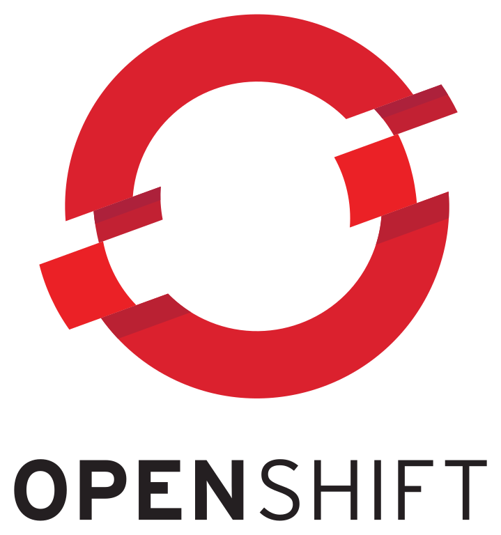
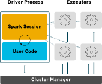
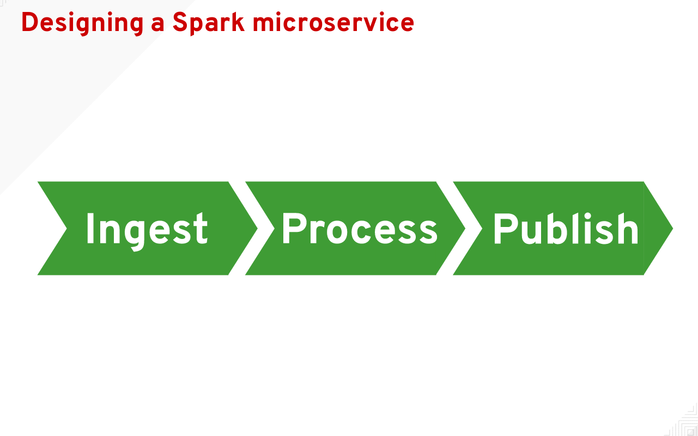
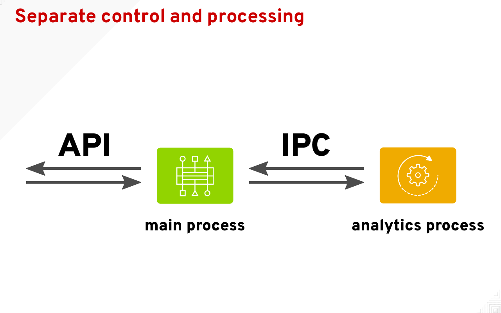

Pythonic cloud native Apache Spark design patterns
Michael McCune - msm@redhat.com
#devconfcz
#devconfcz
#devconfcz

#devconfcz
General Spark architecture
#devconfcz
How to interact with Spark
Run an application
spark-submit --master=local[1] MyApp.py
Start a REPL
Scala
spark-shellPython
pysparkR
sparkR#devconfcz
The fundamental Spark abstraction
Resilient distributed dataset (RDD)
are
partitioned,
lazy,
and immutable
homogenous collections
#devconfcz
Resilient distributed datasets in action

#devconfcz
simple.py
1 import sys
2 from pyspark.sql import SparkSession
3
4 spark = SparkSession.builder.appName("simple").getOrCreate()
5
6 data = range(int(sys.argv[1]))
7
8 evens = spark.sparkContext.parallelize(data)\
9 .filter(lambda x: x%2 == 0)\
10 .count()
11
12 print("Out of 0-{} there are {} even numbers."
13 .format(sys.argv[1], evens))
#devconfcz
#devconfcz
On-demand batch processing
1 def produce_pi(scale):
2 spark = SparkSession.builder.appName("PythonPi")\
3 .getOrCreate()
4 n = 100000 * scale
5
6 def f(_):
7 from random import random
8 x = random()
9 y = random()
10 return 1 if x ** 2 + y ** 2 <= 1 else 0
11
12 count = spark.sparkContext\
13 .parallelize(xrange(1, n + 1), scale)\
14 .map(f)\
15 .reduce(lambda x, y: x + y)
16 spark.stop()
17 pi = 4.0 * count / n
18 return pigithub.com/radanalyticsio/tutorial-sparkpi-python-flask/app.py
#devconfcz
On-demand batch processing, HTTP server style
1 @app.route("/sparkpi")
2 def sparkpi():
3 scale = int(request.args.get('scale', 2))
4 pi = produce_pi(scale)
5 response = "Pi is roughly {}".format(pi)
6
7 return responsegithub.com/radanalyticsio/tutorial-sparkpi-python-flask/app.py
#devconfcz
On-demand batch processing, gRPC server style
1 class SparkPiServicer(sparkpi_pb2_grpc.SparkPiServicer):
2 def __init__(self, *args, **kwargs):
3 super(SparkPiServicer, self).__init__(*args, **kwargs)
4 self.lock = threading.Lock()
5
6 def GetPi(self, request, context):
7 self.lock.acquire()
8 print('Scale requested = {}'.format(request.size))
9 pi = produce_pi(request.size)
10 self.lock.release()
11 return sparkpi_pb2.Pi(value=pi)github.com/elmiko/sparkpi-python-grpc
#devconfcz
Continuous batch processing
1 while True:
2 cursor.execute("SELECT * FROM ratings")
3 current_ratings_length = cursor.rowcount
4
5 if current_ratings_length != ratings_length:
6 ratings_length = current_ratings_length
7 ratings = cursor.fetchall()
8 ratingsRDD = sc.parallelize(ratings)
9 ratingsRDD = ratingsRDD.map(
10 lambda x: (x[0], x[1], x[2]))
11 model_version += 1
12 logger.info("model version={}".format(model_version))
13 model = modeller.Trainer(data=ratingsRDD,
14 rank=parameters['rank'],
15 iterations=parameters['iteration'],
16 lambda_ = parameters['lambda'],
17 seed=42).train()
18 writer.write(model=model, version=model_version)
19 else:
20 time.sleep(120)github.com/radanalyticsio/jiminy-modeler/app.py
#devconfcz
Structured stream processing
1 spark = SparkSession.builder.appName("grafzahl").getOrCreate()
2 spark \
3 .readStream \
4 .format("kafka") \
5 .option("kafka.bootstrap.servers", servers) \
6 .option("subscribe", topic) \
7 .load() \
8 .selectExpr("CAST(value AS STRING)") \
9 .groupBy("value") \
10 .count() \
11 .writeStream \
12 .outputMode("complete") \
13 .format("memory") \
14 .queryName("results") \
15 .start()github.com/radanalyticsio/grafzahl/app.py
#devconfcz
Structured stream processing
1 def top(request):
2 results = spark.sql(
3 "SELECT * FROM results ORDER BY count DESC LIMIT {}" \
4 .format(int(request.args.get('n') or 10))) \
5 .collect()
6 return (map(lambda x: x.value, results),
7 map(lambda x: x['count'], results))github.com/radanalyticsio/grafzahl/app.py
#devconfcz
Stream processing, kappa architecture
1 sc = pyspark.SparkContext(appName='word-filter')
2 ssc = streaming.StreamingContext(sc, 3)
3 kds = kstreaming.KafkaUtils.createDirectStream(
4 ssc, [intopic], {'bootstrap.servers': servers})
5 words = kds.map(lambda x: x[1])
6 filterwords = words.filter(
7 lambda x: False if re.search(regexp, x) is None else True)
8
9 def send_response(rdd):
10 producer = kafka.KafkaProducer(bootstrap_servers=servers)
11 for r in rdd.collect():
12 producer.send(outtopic, str(r))
13 producer.flush()
14
15 filterwords.pprint()
16 filterwords.foreachRDD(send_response)
17 ssc.start()
18 ssc.awaitTermination()github.com/elmiko/word-filter/app.py
#devconfcz
oshinko in action
#devconfcz
Synchronicity
#devconfcz
Asynchronicity
#devconfcz
Separate control and processing
1 import multiprocessing as mp
2 # queues for ipc with the prediction process
3 request_q = mp.Queue()
4 response_q = mp.Queue()
5
6 # start the prediction process
7 process = mp.Process(target=predictions.loop,
8 args=(request_q, response_q))
9 process.start()
10
11 # waiting for processing loop to become active
12 response_q.get()github.com/radanalyticsio/jiminy-predictor/app.py
#devconfcz
Separate control and processing
1 def loop(request_q, response_q):
2 spark = pysql.SparkSession.builder.appName("JiminyRec")\
3 .getOrCreate()
4 sc = spark.sparkContext
5 # let the main process know we are ready to start
6 response_q.put('ready')
7 while True:
8 req = request_q.get()
9 if req == 'stop':
10 break
11 resp = req
12 if 'topk' in req:
13 # make rank predictions
14 # ...
15 response_q.put(resp)
16 else:
17 # make rating predictions
18 # ...
19 response_q.put(resp)github.com/radanalyticsio/jiminy-predictor/predictions.py
#devconfcz
Mind your dependencies
1 import sys
2 import pymongo
3 from pyspark.sql import SparkSession
4
5 def filter_evens(value):
6 if value % 2 == 0:
7 db = pymongo.MongoClient().evens
8 doc = db.counts.find_one({"value": value})
9 if doc is not None:
10 count = doc["count"] + 1
11 db.counts.replace_one({"_id": doc["_id"]},
12 {"value": value, "count": count})
13 else:
14 db.counts.insert_one({"value": value, "count": 1})
15
16 spark = SparkSession.builder.appName("simple").getOrCreate()
17
18 data = range(int(sys.argv[1]))
19
20 evens = spark.sparkContext.parallelize(data)\
21 .filter(filter_evens)\
22 .count() #devconfcz


